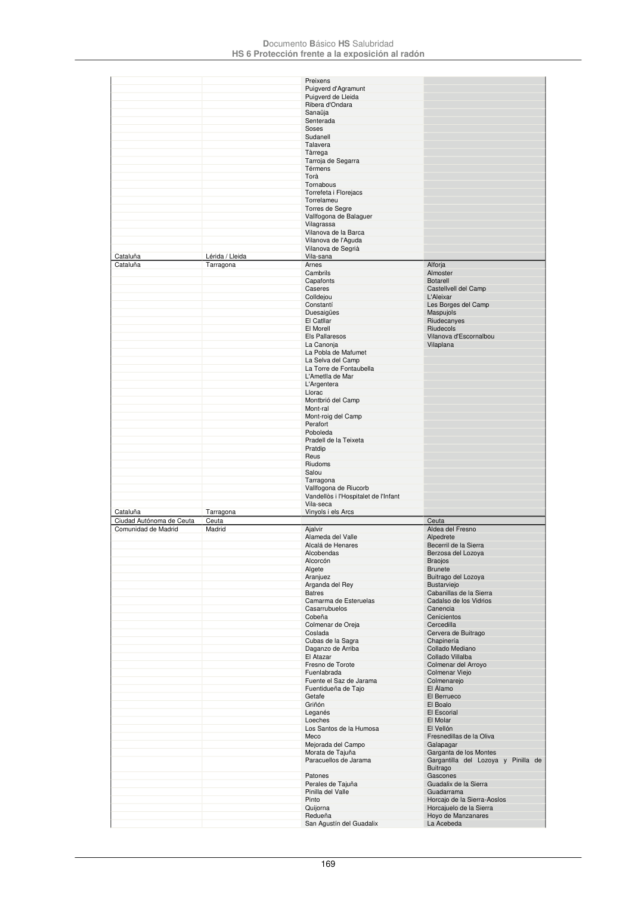

DB-HS Salubridad · edición 2022-06-14 · capa oficial
Documento DB-HS-oficial · SHA-256 del PDF 68df3caacc95f71aee2ec1ba7b2c65ae66155c21e3a8785521b8fdd4fd640d3b
Página física 169 de 184.
Copia fiel del PDF fuente · Fuente oficial
Ficha de la disposición en la fuente oficial
Formato: Texto de la página (Markdown)
Documento Básico HS Salubridad HS 6 Protección frente a la exposición al radón 169 Preixens Puigverd d'Agramunt Puigverd de Lleida Ribera d'Ondara Sanaüja Senterada Soses Sudanell Talavera Tàrrega Tarroja de Segarra Térmens Torà Tornabous Torrefeta i Florejacs Torrelameu Torres de Segre Vallfogona de Balaguer Vilagrassa Vilanova de la Barca Vilanova de l'Aguda Vilanova de Segrià Cataluña Lérida / Lleida Vila-sana Cataluña Tarragona Arnes Alforja Cambrils Almoster Capafonts Botarell Caseres Castellvell del Camp Colldejou L'Aleixar Constantí Les Borges del Camp Duesaigües Maspujols El Catllar Riudecanyes El Morell Riudecols Els Pallaresos Vilanova d'Escornalbou La Canonja Vilaplana La Pobla de Mafumet La Selva del Camp La Torre de Fontaubella L'Ametlla de Mar L'Argentera Llorac Montbrió del Camp Mont-ral Mont-roig del Camp Perafort Poboleda Pradell de la Teixeta Pratdip Reus Riudoms Salou Tarragona Vallfogona de Riucorb Vandellòs i l'Hospitalet de l'Infant Vila-seca Cataluña Tarragona Vinyols i els Arcs Ciudad Autónoma de Ceuta Ceuta Ceuta Comunidad de Madrid Madrid Ajalvir Aldea del Fresno Alameda del Valle Alpedrete Alcalá de Henares Becerril de la Sierra Alcobendas Berzosa del Lozoya Alcorcón Braojos Algete Brunete Aranjuez Buitrago del Lozoya Arganda del Rey Bustarviejo Batres Cabanillas de la Sierra Camarma de Esteruelas Cadalso de los Vidrios Casarrubuelos Canencia Cobeña Cenicientos Colmenar de Oreja Cercedilla Coslada Cervera de Buitrago Cubas de la Sagra Chapinería Daganzo de Arriba Collado Mediano El Atazar Collado Villalba Fresno de Torote Colmenar del Arroyo Fuenlabrada Colmenar Viejo Fuente el Saz de Jarama Colmenarejo Fuentidueña de Tajo El Álamo Getafe El Berrueco Griñón El Boalo Leganés El Escorial Loeches El Molar Los Santos de la Humosa El Vellón Meco Fresnedillas de la Oliva Mejorada del Campo Galapagar Morata de Tajuña Garganta de los Montes Paracuellos de Jarama Gargantilla del Lozoya y Pinilla de Buitrago Patones Gascones Perales de Tajuña Guadalix de la Sierra Pinilla del Valle Guadarrama Pinto Horcajo de la Sierra-Aoslos Quijorna Horcajuelo de la Sierra Redueña Hoyo de Manzanares San Agustín del Guadalix La Acebeda

Datos candidatos: compruebe celdas y notas en el PDF.